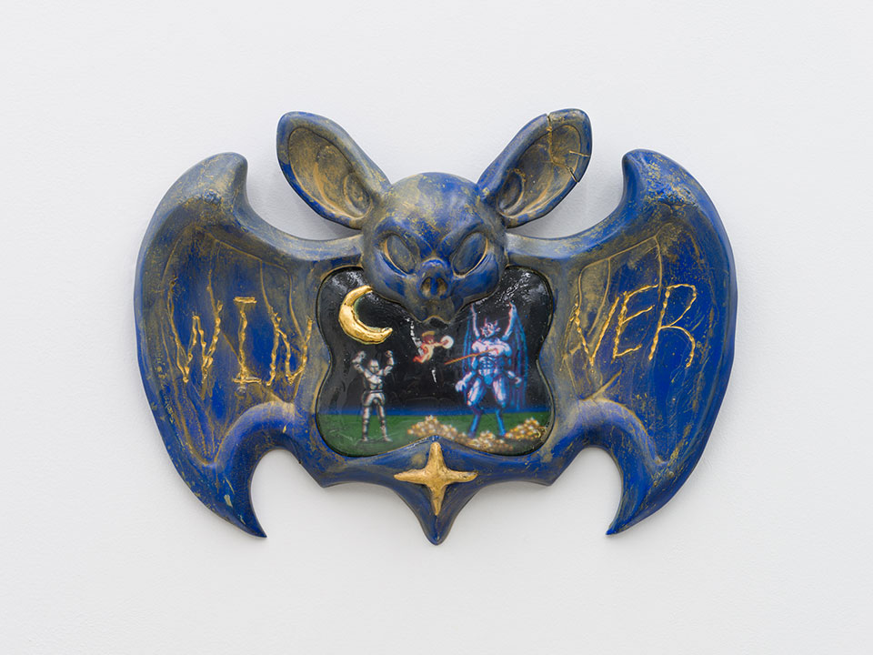
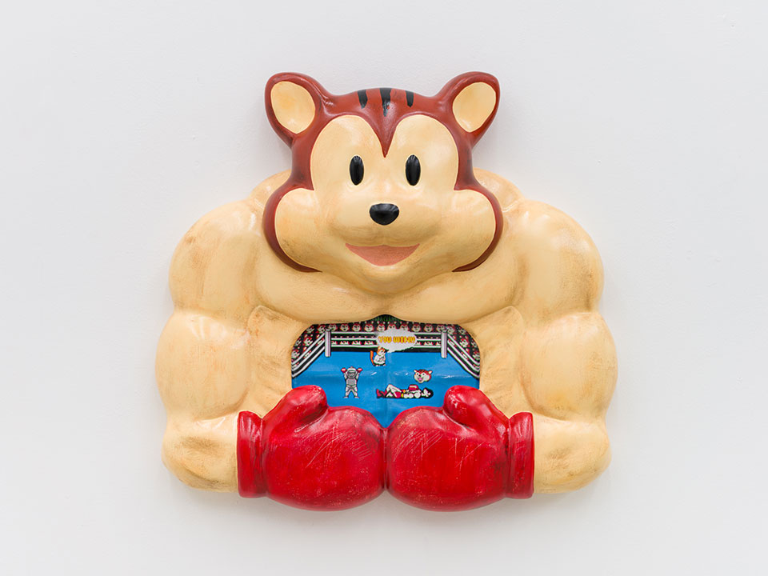
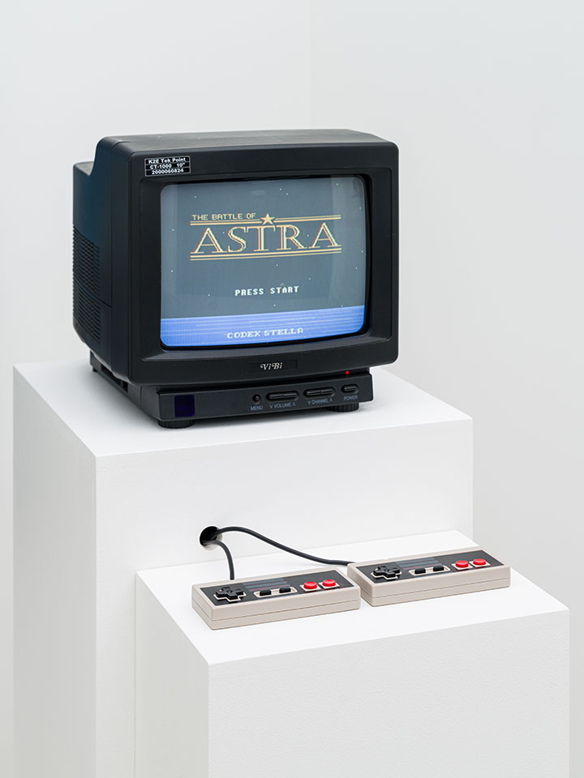
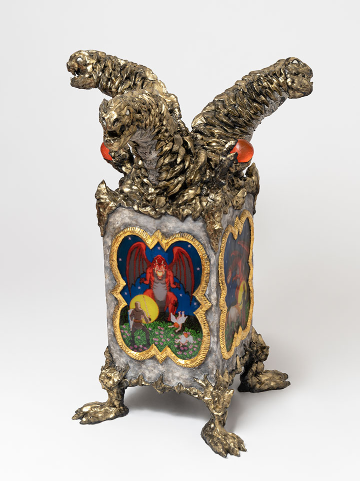
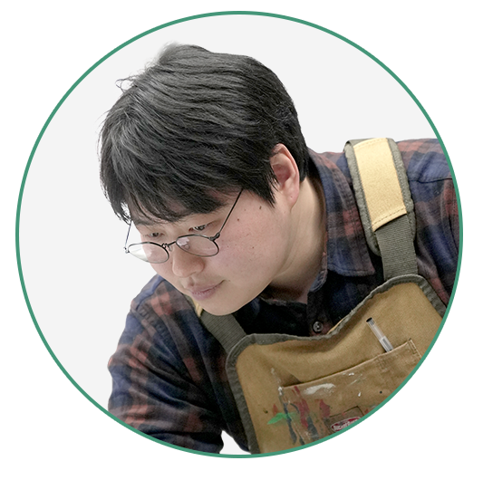

악마를 쓰러뜨리고, 더 좋은 아이템을 얻고, 다시 같은 길로 돌아간다.
승리의 서사는 늘 다음 승리를 부르고, 성취는 미묘하게 이어진다.
그런데 문득, 화면 너머의 내가 묻는다. “그래서, 이 승리는 결국
누구의 것이지?” 반복의 끝에서 떠오른 질문은 ‘아무도’ 승리하지 못한
장면으로 흘러가고, 한 도시의 간판 위에서 뜻밖의 문장을 발견한다.
노원(NOWON). 분절되어 보이는 글자 사이로, NO ONE이 떠오르는 순간.
김한샘 작가의 전시 〈NOWON〉은 그렇게 시작됐다.
김한샘의 작업은 아날로그와 디지털, 현실과 가상, 삶과 죽음, 숭고와
키치가 교차하는 지점에서 형성돼 왔다. 여러 하위문화로부터 참조점을
길어 올리되, 서로 다른 장르와 형식을 의도적으로 충돌시키며 그
사이에서 발생하는 역설의 에너지를 작업의 동력으로 삼는다. 그리고
그 에너지는 이제 ‘플레이’의 문법을 빌려 전시장 안에서 새로운
감각으로 번역된다.
NOWON, NO ONE, 그리고 ‘NO 원’이라는 생활의 감각
〈NOWON〉이라는 제목에는 유난히 여러 겹의 문이 달려 있다. 작가는
전시를 구상하던 시기, 게임의 반복 구조—악마를 쓰러뜨리고 보상을
얻고 다시 같은 루프를 도는 과정—안에서 ‘승리’가 계속
갱신되는데도 이상하게 남는 공허를 생각했다. “좋은 아이템을
얻어봤자 나한테 좋은 게 뭐지?” 같은 질문이 따라붙고, 결국엔
“아무도 승리하지 못한 어떤 장면”을 떠올리게 됐다고 했다.
그 무렵 이사한 곳이 노원이었다. 어느 날 개찰구를 지나며 마주친
‘노원’이라는 단어가, 영어처럼 분절되어 보이면서 NO ONE으로
읽히는 순간이 있었다. 그리고 ‘원’이라는 화폐 단위를 겹쳐보면 ‘NO
원’, 돈이 없다는 말처럼도 연결될지 모른다는 생각이 들었다.
말장난처럼 시작된 연상은, 이번 전시에서 ‘개인적인 삶’과 ‘보통의
삶’을 다루고 싶었던 마음과 맞물리며 제목이 됐다. 지역 이름이
작품의 문장으로 바뀌는 순간, 전시는 생활의 온도를 얻고, 질문은
더 구체적인 얼굴을 갖는다.
켜져 있어야 존재하는 것들 : 화면 밖으로 나온 이미지
김한샘 작가는 어린 시절부터 컴퓨터 화면 위에서 이미지를
만들었다. 그런데 오래 만들다 보니 자연스럽게 다가온 감각이 있다.
컴퓨터가 켜져 있지 않으면, 그 이미지가 유지되지 않는다는 사실.
“손에 잡히는 무언가로 만들고 싶다”는 욕구는 거창한 선언이
아니라, 오히려 아주 일상적인 결핍에서 출발했다.
출력도 해보고, 여러 가지의 시도를 해봤지만 어딘가 “빈약하다”는
느낌이 남았다. 화면 속에서는 분명 강렬한데, 현실로 나오면
가벼워지는 순간. 그때 작가의 선택은 ‘이미지’에 머무는 것이
아니라, 이미지를 지탱할 오브제의 몸을 만드는 일이었다. 그래서
그의 게임 화면과 캐릭터는 단지 ‘그림’이라기보다, 어느새 전시장
안에서 ‘물건’처럼 느껴진다. 가상이 가진 실체감을, 현실의
촉각으로 보완하려는 시도다.


반짝임과 단단함 : 디지털을 보완하는 물성의 선택

▲ 김한샘 작가의 작업물레진, 락커, 금속박처럼 반짝이고 단단한 재료가 자주 등장하는 이유도 같은 맥락에 있다. 디지털 이미지를 많이 다루다 보니 오히려 그것을 보완해 줄 물질감 있는 재료를 찾게 된다. 화면의 빛은 스스로를 증명하지만, 꺼지면 사라진다. 반면 현실의 표면은 만져지고, 남는다. br 특히 ‘액자’를 만들려다 보면, 전통적인 종교화의 문법과도 맞닿는다. 금박이나 반짝이는 재료를 통해 숭고함을 구성하던 오래된 방식은, 김한샘의 작업 안에서 디지털 이미지의 평면성을 넘어서는 또 다른 ‘설득력’이 된다. 픽셀이 만들어내지 못하는 무게와 결, 그 물성이 작품을 붙잡아주는 순간, 관객은 화면이 아니라 표면에서 먼저 시간을 발견하게 된다.
존중에서 시작되는 창작의 윤리
임의 문법을 작업으로 가져오는 일은, 상상력만큼이나 ‘경계
감각’을 요구한다. 익숙한 이미지일수록 어디까지가 공통의 문화적
언어이고, 어디서부터가 누군가의 권리와 맞닿는지 더 섬세하게
살펴봐야 한다. 김한샘 작가는 작업을 진행할수록 바로 그 지점을
자연스럽게 의식하게 된다고 말한다.
그래서 김한샘 작가는 무엇을 그대로 옮겨오거나 기대기보다는,
스스로 만들어낸 이미지와 설정, 자신만의 소스로 세계를 세우는
쪽을 택해왔다. 필요한 경우에는 참고하는 자료가 어떤 조건에서
이용 가능한지를 한 번 더 확인하고, 권리와 출처를 점검하는
과정을 거친다. 빠르게 만드는 것보다, 오래 남을 수 있는
방식으로 만들기 위해서다.

▲ 김한샘 작가의 작업물빠른 유행보다 느린 관찰 : 다음 세계를 준비하는 방식
AI와 기술은 빠르게 바뀌지만, 김한샘 작가의 태도는 조용하다.
새로운 기술이 생겼다고 해서 ‘따라가야겠다’는 마음이 크지 않다고
말한다. AI도 써보긴 하지만, 어쩐지 “싸우게 된다”는 말은 기술을
맹목적으로 끌어안기보다, 거리를 두고 바라보는 김한샘 작가의
성향을 드러낸다. 김한샘 작가에게 중요한 것은 트렌드 자체가
아니라 나와 세상 사이에 생기는 괴리다. 그 괴리를 오래
바라보다가, 거기서 생기는 부산물로 작업을 만든다.
최근 김한샘 작가의 관심은 TRPG(테이블탑 롤플레잉 게임)로도
옮겨가고 있다. 아직 어떻게 활용할지는 모르지만, 직접 플레이하며
가능성을 더듬는 중이라고 했다. 그리고 요즘 김한샘 작가의
마음속에 자주 떠오르는 변화는 하나 더 있다. 예전에는 삶과 작업을
분리해서 생각했는데, 이제는 내 삶과 주변의 사건들을 작업 안에
녹여낼 수 있지 않을까 하는 생각이 자주 든다는 것. 〈NOWON〉이
지역의 이름을 그대로 가져온 것처럼, 김한샘 작가의 다음 세계는
어쩌면 더 생활 가까운 자리에서 시작될지도 모른다.

시각예술가 김한샘의 저작권 시선
저작권은 창작의 ‘이름표’다
“저작권은 창작물에 붙는 이름표 같다고 생각해요. 겉모습이 비슷한 매를 구분하려고 발목에 시치미라는 표식을 달듯, 누가 만든 것인지 분명해야 남의 것이 내 것이 되는 일을 막을 수 있으니까요. 내 창작물을 소중히 여기듯, 남의 창작물도 소중히 여기는 것. 그 마음이 창작을 지속 가능하게 하는 가장 기본적인 약속이라고 믿습니다.”